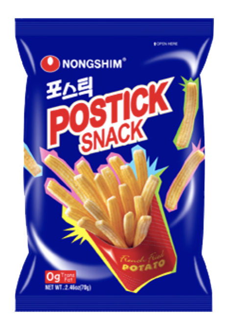
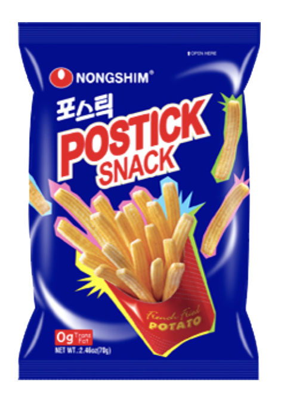
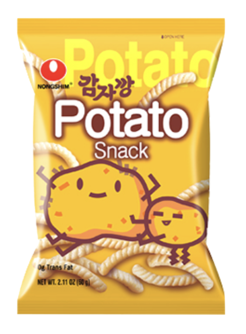
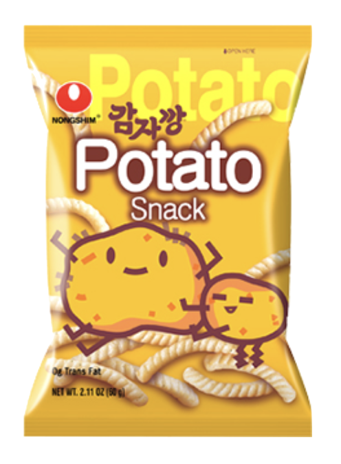

Banana Kick
Weight: 75g
Year of Release: 1978
Rating: 4/5
Notable flavors: banana
I was pleasantly surprised with this snack. I expected that the flavor would taste artificial, but it actually tasted like real banana. This snack was recommended to me by my sister, after she bought and tried it herself. I had my doubts, but I enjoyed the taste!.
 

 
